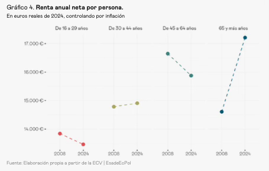
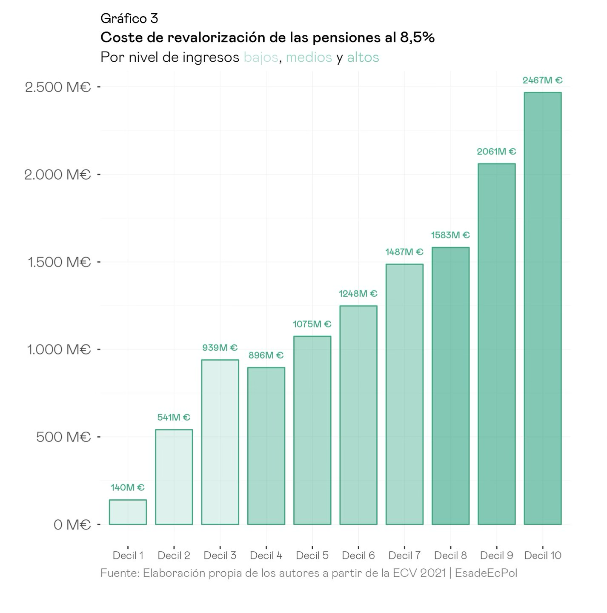
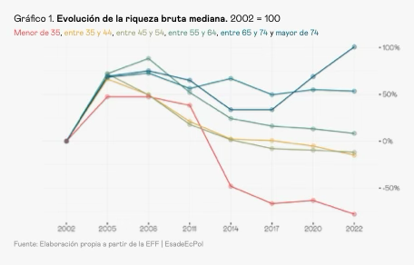
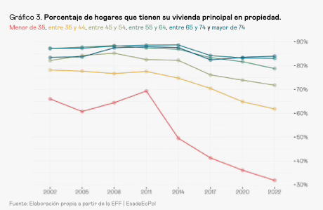

Substack · Rango abierto · December 28, 2025 · read the original →
No merit, no solidarity, no fairness—they gave you a master's degree and kept the apartments for themselves.
They promised you that effort and solidarity would be rewarded—but there's none to be found. And the dominant ideologies manage scarcity, unlocking opportunities.
[Let me be a little more blunt. Just this once, okay? Here we go.]
"Here, take this tool: do something with it. Make the most of it—and make sure that whatever you get out of it benefits me, since I'm the one funding this tool, okay?"
That's what the previous generation tells you, more or less. The tool is… I don't know… a college degree. A master's degree. Knowing English. A specialized course. A contact. A low-paying internship.
You grab your tools and head out into the world. But every door is closed. And the few that open demand what you don't have, offer barely enough (like a salary so low it doesn't cover rent or even the cost of getting to work), or both. They haven't given you what you need to open them.
[I left in 2011. With a scholarship. A European one, not a Spanish one. In 2013, when there was no country to return to. So I didn't go back.]
A year or two or three or five or ten later, they approach you: "Hey, but…
You haven't done anything with that tool I gave you. Where are your apartments? Where are your kids? It's the best tool we have. I didn't have tools like yours, you know. What more could I have wanted? Seriously, can't you do anything better with it?"
[This has happened to me at casual gatherings and dinners, seriously. From people I adore. It's happened to you. It's happened to all of you. It took me a decade to be able to answer that this was what I'd achieved. The time between having to leave to make a life for myself and being able to return with it on track.]
How do you explain to them that having a tool doesn't mean you have the opportunity to use it?
You try anyway. You don't know where to start or how to proceed. They gave you a promotion and kept the apartments.
And what do you get in return? Silence? No, something worse: reproach.
Merit and solidarity in exchange for nothing—a pact
The reproach comes in two versions.
There's the version that demands merit. You aren't putting in enough effort. You haven't pursued enough advanced complementary studies, enough jobs, enough housing in enough cities. You haven't put enough of yourselves out there. You aren't flexible enough. Too much. You aspire to too much. To a very specific sector. To ending up in a very specific neighborhood. To a position that's too comfortable. If you put in enough effort, if you don't stop insisting, in the end the effort will be rewarded.
The problem is that it takes so long that you start to have doubts. And you see so many people your age or a little younger who have been at it for years with the same patience, the same dedication, the same determination—and who haven't received any reward either. And if the reward doesn't come, the logic of merit breaks down. It doesn't matter what they promise anymore. Since it isn't credible, it starts to seem pointless. And the virtuous cycle breaks down. Instead, it becomes a vicious one: less effort because the expected reward is none—those who argue that you aren't trying hard enough already have their proof.
[The favorite choice of many people in my class, after 30-something years of fragmented emigration, temporary contracts, and accumulated master's degrees: passing a civil service exam.]
At this point, the logic of merit no longer holds water. So it's time to ask for what's due, right? Hey, there are people here who've made it (many of whom are older than you, too). Where's your share? Do they have it and you can't get any? Why does the wealth concentrate on them while here the newcomers contribute without expecting to receive the same?
And in response to this, you're told to show solidarity. That they worked hard enough in life, starting from nothing, to at least have something (a home or two and a pension slightly above the national minimum wage). Now it's your turn to work so they can live comfortably, and you should be grateful, because you inherited a country with services, more rights, and better infrastructure. What you have comes from those who came before you. And if you don't keep paying for it, it will disappear.
But here's the problem: how can you show solidarity with a system that gives you no reason to believe you'll get anything in return? If the system already gives you the impression that it's gone.
Both demands—merit and solidarity—assume the same thing: that there's something waiting on the other side. That effort leads somewhere. That the contribution is returned in one way or another, whether by the market or through a pact, so to speak. But that's exactly what's missing.
Let's remember: between 2008 and 2024, the only age group whose income has actually increased over the last two decades is those over 65.

Pensions rise with the CPI, and the minimum pensions rise just as much as the maximum ones. Here's a simulation for the major revaluation of 2023.

The wealth of two generations has plummeted compared to previous levels.

Essentially because of the inability to afford housing.

Public spending has shifted toward those who already have, while investment in areas that could unlock opportunities—housing, transportation, research—is falling or stagnating.
What those who criticize don't seem to understand is that I believe people between the ages of 18 and 40 want to believe in hard work. That dedication pays off. And I also believe they want to be supportive. They want to contribute to a system that takes care of those who need it, including those who came before. People haven't stopped believing in hard work. They haven't stopped wanting to contribute. They've stopped seeing a reason to do so. And what they need is for that contribution to offer the possibility of giving more and receiving more: for there to be opportunity.
Without opportunity, merit seems like a scam. They tell you that if you work hard enough, you'll get there, but there's nowhere to get to. Effort dissolves into a market that has no place for you.
Without opportunity, solidarity feels like exploitation. They tell you to contribute to the well-being of others who benefit more from it, promising that you'll get your share later, but there's no reason to believe that promise will be kept. Solidarity without simultaneous and credible reciprocity… isn't solidarity.
There is no longer a pact.
The Ideologies of Scarcity
The scarcity of opportunities is not just the starting point: it is a policy we have created and continue to create.
It's the neighbor who owns property and prioritizes profits over housing. When he protested against the new building in the neighborhood, he wasn't thinking about his son's apartment. But his vote counts just the same. The pensioner votes for the maximum increase tied to the CPI while wages stagnate. His pension goes up every year; his daughter's salary, it doesn't. Who do you think pays the difference? The traditional parties that prefer to hand out vouchers or discounts rather than actually free up land, because the former makes for appealing headlines while the latter leads to conflict with neighbors. A rental voucher with no housing supply lowers prices, but they fear that freeing up land for housing might cost them votes at the local level. So they choose the subsidy. Every time. It is, therefore, an implicit, broad though poorly articulated coalition of people who already have—a pension, stability—and who vote, with varying degrees of awareness of their position, but to preserve what they have. You don't need to be aware to be part of a coalition. It's enough to vote. And politicians who respond to that. Not out of malice. Sometimes out of self-interest. Almost always because what has worked for them—shouldn't it work for those who follow?
But the point is that it isn't working. And with opportunities blocked by a political system incapable of unblocking them, the ideologies of "the pie isn't growing" prevail—every slice someone else takes is one you don't get; someone else's success becomes your failure. In that terrain, only two things grow. They come from opposite sides, but they share the same ground: the certainty that there is no more.
One says: Let's close the borders. Don't let any more in. What's ours is ours. The border protects us. It's the politics of scarcity.
In the campaign for the recent Extremaduran elections, Vox proposed banning rentals to immigrants and establishing "national priority" based on years of family roots. It sounds like liberation, but it doesn't liberate—it just decides who stays out of the distribution, and it does so with xenophobic criteria. The pie remains just as small. In Italy, Meloni has been pushing "Italians first" for years, and the courts are overturning her discriminatory measures one after another—while the country has a housing construction rate comparable to… Spain's.
In the Netherlands, Wilders won the election, among other things, by linking housing and immigration; his government collapsed within months without having actually achieved anything. In short: all this does is change who you point the finger at when there aren't enough homes, or spots in early childhood education, or square meters of living space, available.
The other side says: Let's redistribute. Let's control prices. Let's give out vouchers. Let's regulate who gets first access to the little that's available. It's the politics of scarcity.
It sounds like justice, but it creates nothing: it merely organizes the line; it doesn't make the end any longer. In Berlin, they tried the Mietendeckel: supply fell five times faster than prices. In Stockholm, they've had rent control since World War II; the average waiting list is nine years, and in the city center, twenty. It assumes that scarcity is the starting point… and the destination.
Oh, come on. If the left's response to this comparison is "But they're not equivalent!"—well, okay, of course I understand and share that moral stance. But if that's all they say, if they get stuck in a zero-sum mindset, they're just paving the way for the other side. Every apartment that disappears due to rent control is an easier vote for those who say "there are just too many." Every waiting list that grows longer is another argument for those who promise to close the borders. The left's approach to scarcity not only fails to solve anything: it creates conditions for the right-wing scarcity electorate to flourish.
And, in essence, neither of them breaks the deadlock. Both manage conflict within the existing framework. And note that for now they allow the basic balance to survive: those who already have continue to have, while targeting "the rich" or "outsiders." But what if they become the target?
Here's what those who already have it need to understand: the status quo perpetuates the conflict by keeping things as they are. The pact is broken, and the conflict is here. The only thing we're deciding is whether the conflict will be about how to distribute the misery or about how to get more of it.
[We've been at this for nine years, by the way: those who have "The Invisible Wall."]
Adam Przeworski once said something along the lines of: to reach the peaks of growth, a society must traverse the valley of reform. People are willing to make sacrifices today if they believe there is something waiting for them tomorrow. Those under 40 have been asked to walk through this valley, yet all they've seen is more of the same. So now, even those who already have something will have to walk through the valley too. Not because it's fair (which it is), but because it's the only way out that doesn't end badly for everyone. Without shared prosperity, the fight over the crumbs intensifies. It could be against the government or against vulture funds. Or against the elite. Or… against the boomers.
I know that most of them want their children to do well. I know that their children want to contribute, work hard, and make a difference. No one in their 40s is asking for anything for free, or to keep it all for themselves. They're asking for a chance to try. And they're right. But for that to happen, something has to give.
The 30,000 euros that someone lent their son for a down payment is proof that the system doesn't work. But they kept voting as if it did, as if somehow acceptance is already there, like a seed. The acceptance that for the new generations, there must be a way, a means, and a place—the tools they were given.
What is missing is not will or effort. It is space for opportunity.
We have to build it.
[This draft has, in a way, been with me since I left Spain. Now I'm finishing it from a flat that is finally mine. Unrenovated. From 1969. In a fantastic middle-class Madrid neighborhood outside the M30. Bought at 39 and a half. With a lot of luck, with a partner, without kids or family obligations, and after a decade away. This is the success story. Imagine the others. Or rather: you probably won't need to, because maybe one of them is yours.]